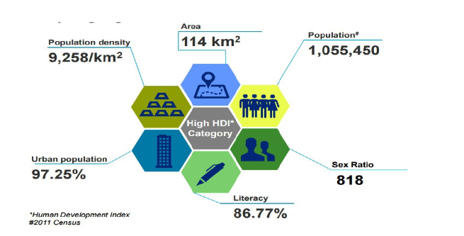
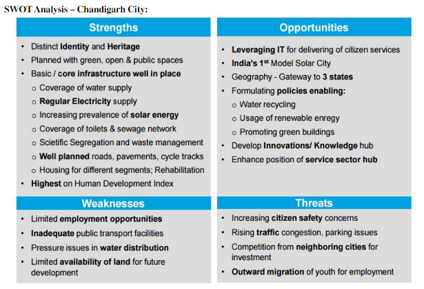
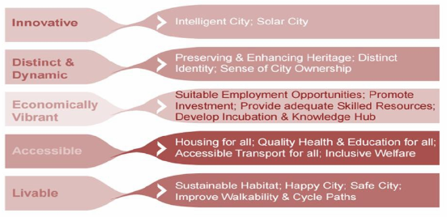

Chandigarh: The City Beautiful
Chandigarh is in the list of 98 cities which are under the Smart City Project of Government of India.
Chandigarh is among four cities which the French government has identified to invest in as part of the
Indian government’s smart city project and has allocated as much as two billion Euros to be spent over
the next few years
Profile of “The City Beautiful – Chandigarh”:
Chandigarh is a city and a union territory in the northern part of India that serves as the capital of
the states of Punjab and Haryana . As a union territory, the city is ruled directly by the Union
Government and is not part of either state. Chandigarh and adjoining cities of Mohali (Punjab) and
Panchkula (Haryana) are together called Chandigarh Tricity.
Chandigarh is located near the foothills of the Shivalik range of the Himalayas in northwest India. It
covers an area of approximately 114 km2. It shares its borders with the states of Haryana and Punjab.
The exact cartographic co-ordinates of Chandigarh are 30.74°N 76.79°E. It has an average elevation of
321 metres (1053 ft).The city of Chandigarh was the first planned city in India post-independence in
1947 and is known internationally for its architecture and urban design.
The master plan of the city was prepared by Swiss- French architect Le Corbusier , transformed from
earlier plans created by the Polish architect Maciej Nowicki and the American planner Albert Mayer. In
2015, an article published by BBC named Chandigarh as one of the perfect cities of the world in terms of
architecture, cultural growth and modernization.The roads in Chandigarh are surrounded by trees and it
has the third highest forest cover in India at 8.51% following Lakshadweep and Goa.
Human Development Index:

Strength, Weakness, Opportunity, Threats:

Goals And Visions:

Challenges for Chandigarh in becoming the Smart City:
1. Healthcare:
Chandigarh is the cradle of healthcare in the region, but lacks even basic infrastructure and manpower
requirements for the city’s residents. Against a total requirement of 80 dispensaries for nearly 13 lakh
residents, with each catering to 15,000 residents, the city has only 43.
2. Education:
This year Chandigarh’s colleges have crossed the student enrolment figure set by the college population
index according to which against one lakh students, one college is required.In the city’s seven
government colleges, though well equipped, the laboratories need to be converted into virtual labs. The
colleges have a shortage of hostel seats while students of Sector 42 and 46 colleges face a connectivity
problem. Panjab University has been bagging the top position in international platforms, but is
struggling for funds. It is yet to come up with smart classrooms and new hostels. Chandigarh has 107
schools but these lack proper furniture, laboratories and space; there is a shortage of regular staff
too, librarians have not been appointed by the Education Department, and neither do schools have regular
counsellors. Toilets in some schools are without taps, playgrounds have restricted space with floodlight
poles in the middle to check thefts, and sports
are a neglected field. The student-teacher ratio is not being maintained as per the provisions of the
RTE Act in a few schools and the students have not been issued health cards as required.
3. Solid Waste Management:
Chandigarh MC spends crores on purchase of garbage-lifting vehicles, bins and rehris, but has failed to
put in place the process for collection and segregation of garbage at household level and at Sehaj Safai
Kendras. So, garbage which can be recycled is being dumped at open spaces. Bio-medical waste management
is also not effective in city. Chandigarh generates 370 tonnes of waste daily; 270 tonnes goes to
garbage processing plant in Dadumajra and 100 tonnes to the dumping ground in Dadu Majra. MC has
53-dumper placers to lift garbage from 550 garbage bins in the city, but garbage is lifted from most
bins on alternate days. On a daily basis, MC lifts garbage from 190 bins. In some sectors, it empties
bins once in three days, once a week and even once in 15 days.
4. Regulating Traffic:
In Chandigarh, regulating the traffic is a big challenge, because of the number of vehicles — 9.75 lakh,
while 2 lakh vehicles use city roads daily from the periphery.
5. Transport Service:
Chandigarh offers only a local bus service. At present, the bus service on most routes shuts down by 9
pm. A user-friendly bus route information system eludes the city. For many destinations, two buses have
to be changed, but there are no route plans to guide commuters. The bus numbers are mentioned at every
place, but not the route and the time it will take to reach its destination. Mobile-based application
“Chandigarh bus guide” informs about the bus routes and shelters, but not about the running schedule of
buses.
Conclusion
In India, administration in the cities are often confronted with a multitude of key problems, like unplanned development, informal real estate markets, inevitable population growth, lack of infrastructure, inadequate transport facilities, traffic congestion, poor power supply, in competent health services, and lack of basic services both within the city and in the suburban areas, poor natural hazards management in overpopulated areas, crime, water, soil and air pollution leading to environmental degradation, climate change and poor governance arrangements are leading the urban citizen life in unhappy. So it is the need of the hour to plan and build the smart cities in view of resolving these problems.